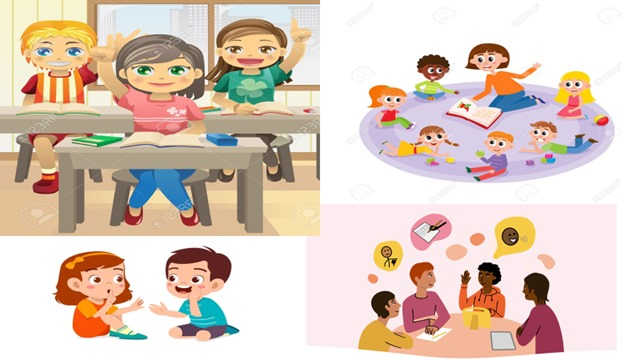

8 Simple principles to build peace in your community If you switch on the TV news, open the newspaper or click onto a popular news website, there’s always news about a terrorist attack, war, ongoing conflict and a general lack of peace amongst different groups of people. In an increasingly globalized world, we should understand each other better, stand ever more united and strive for peace. Sadly, the truth is quite the opposite. There’s conflict in Israel/Palestine, Kashmir, Iraq, Afghanistan, Syria, all over the world in fact… As individuals and citizens, how do we deal with this? How does this relate to us? How can we make positive changes to enable us to live in peace?
8 principios simples para construir la paz en tu comunidad Si enciende las noticias de la televisión, abra el periódico o haga clic en una noticia popular sitio web, siempre hay noticias sobre un ataque terrorista, guerra, conflicto en curso y una falta general de paz entre diferentes grupos de personas. En un mundo cada vez más globalizado, debemos entendernos mejor, estar siempre de pie, más unidos y luchar por la paz. Lamentablemente, la verdad es todo lo contrario. Hay conflicto en Israel/Palestina, Cachemira, Irak, Afganistán, Siria, en todo el mundo de hecho… Como individuos y ciudadanos, ¿cómo afrontamos esto? ¿Cómo se relaciona esto con nosotros? ¿Cómo podemos hacer cambios positivos que nos permitan vivir en paz?
The good old Golden Rule says it all: empathy, tolerance and peace. This principle teaches you to love yourself and love others. It spans cultures and faiths and is a universal age old concept which can’t fail!
La buena y vieja regla de oro dice todo: empatía, tolerancia y paz. Este principio enseña que te ames y ames a otros. Abarca culturas y religiones y es una era universal ¡Viejo concepto que no puede fallar!
- I treated my friends the way they want to be treated.
- I have treated my friends with the treatment they want to receive.
Engage in dialogue with an open mind and the real will to listen to others. Only then will you be able to understand each other and build bridges. Change cannot happen and peace cannot be established if people are unable to communicate with others; to listen to their experiences and views and show empathy, understanding and compassion.
Participar en el diálogo con la mente abierta y la voluntad real de escuchar a los demás. Sólo así podréis entenderos y tender puentes. El cambio no puede ocurrir y la paz no puede establecerse si las personas no pueden comunicarse con los demás; escuchar sus experiencias y puntos de vista y mostrar empatía, comprensión y compasión.
- My teachers listened to what I had to say.
- I have listened to my teachers on what they have to say
We all have different opinions and we may not all agree on the same things. Building compromise and mutual understanding is incredibly important. Sometimes we simply need to agree to disagree and recognise that there are different beliefs and forms of expression other than our own.
Todos tenemos opiniones diferentes y puede que no todos estemos de acuerdo en las mismas cosas. Lograr compromisos y comprensión mutua es increíblemente importante. A veces simplemente necesitamos estar de acuerdo en no estar de acuerdo y reconocer que existen creencias y formas de expresión diferentes a las nuestras.
- I respected my family's difference of opinion
- I have accepted my family's difference of opinión
Violence is never the answer. Peace can only be brought through free will, dialogue, empathy and forgiveness. Do not stoop to same level as someone who is violent and therefore continue the vicious cycle. This does not change anything.
La violencia nunca es la respuesta. La paz sólo puede lograrse mediante el libre albedrío, el diálogo, la empatía y el perdón. No te rebajes al mismo nivel que alguien que es violento y, por lo tanto, continúas el círculo vicioso. Esto no cambia nada.
- Violence was not encouraged with violence against our brothers.
- We do not fight violence with violence with our brothers
Any one person can have multiple aspects to their identity. Identity comprises many elements such as nationality, cultural-linguistic origin, age and religious beliefs. Identity can and does change, taking on many new forms and means of personal expression as we learn new languages, move home, adopt new beliefs, marry into a different tradition and experience life! Do not put people into a box. Avoid categorising people according to an us vs. them narrative and remember: We are all singular individuals with unique experiences. Such approaches and narratives are highly divisive and unproductive.
Cualquier persona puede tener múltiples aspectos de su identidad. La identidad comprende muchos elementos como la nacionalidad, el origen cultural-lingüístico, la edad y las creencias religiosas. La identidad puede cambiar y de hecho cambia, adoptando muchas formas y medios nuevos de expresión personal a medida que aprendemos nuevos idiomas, nos mudamos a casa, adoptamos nuevas creencias, nos casamos con una tradición diferente y experimentamos la vida. No pongas a la gente en una caja. Evite categorizar a las personas según una narrativa de nosotros versus ellos y recuerde: todos somos individuos singulares con experiencias únicas. Estos enfoques y narrativas son muy divisivos e improductivos.
- It did not discriminated against ethnic and cultural diversity.
- I have not discriminated the identity
Take people for the individuals they are. Avoid misconceptions, stereotypes and toxic narratives and get to know a person instead. This will avoid offence, misunderstandings and ultimately help you to create a real bond with others based on true understanding, empathy and trust. After all, no one likes to be judged – especially from the outsid.
Tome a las personas por los individuos que son. Evite conceptos erróneos, estereotipos y narrativas tóxicas y, en su lugar, conozca a una persona. Esto evitará ofensas, malentendidos y, en última instancia, le ayudará a crear un vínculo real con los demás basado en la verdadera comprensión, empatía y confianza. Después de todo, a nadie le gusta que lo juzguen, especialmente desde fuera.
- I avoided stereotypes
- We have avoided stereotypes
Don’t just believe everything you see on the TV, in the newspapers or on the internet. Think objectively for yourself. Get to know the people and facts behind any story and don’t fall for media scapegoating. Stand united.
No creas simplemente todo lo que ves en la televisión, en los periódicos o en Internet. Piensa objetivamente por ti mismo. Conozca a las personas y los hechos detrás de cualquier historia y no caiga en la trampa de los medios como chivos expiatorios. Manténganse unidos.
- I reserved myself from social networks
- I have reserved myself from social networks

Your choice of language, alongside tone of voice and intonation all convey a message. Make sure that that message is positive. Be mindful of the language you use, avoiding anything with misogynistic, racist, Islamophobic, homophobic or anti-Semitic overtones. Do not underestimate the power of language – for better or for worse! And remember, it’s not always what you say, it’s how you say it.
Su elección de idioma, junto con el tono de voz y la entonación, transmiten un mensaje. Asegúrate de que ese mensaje sea positivo. Sea consciente del lenguaje que utiliza y evite cualquier contenido que tenga connotaciones misóginas, racistas, islamófobas, homofóbicas o antisemitas. No subestimes el poder del lenguaje, ¡para bien o para mal! Y recuerda, no siempre es lo que dices, sino cómo lo dices.
- They maintained good language and tone when expressing themselves
- They have maintained good language and tone when expressing themselves